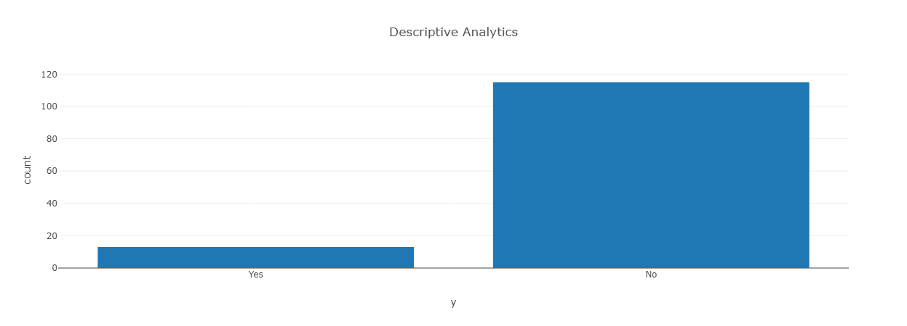
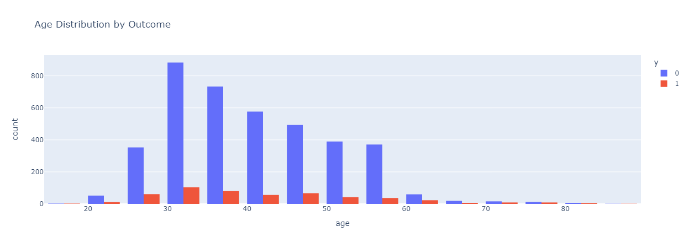
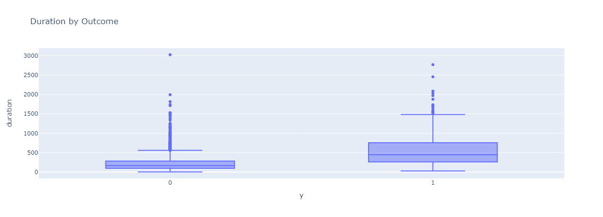

Kelompok 7
Visualisasi MOLAP dari data Bank - Descriptive, Diagnostic, Predictive
Analysis descriptive

Graphik ini Menghasilkan serangkaian grafik batang yang menunjukkan rata-rata kolom numerik dalam data yang dikelompokkan berdasarkan pekerjaan. Setiap grafik menampilkan pekerjaan di sumbu x dan nilai rata-rata kolom numerik yang bersangkutan di sumbu y. Grafik-grafik ini membantu Anda memahami bagaimana nilai rata-rata dari setiap kolom numerik bervariasi di antara kelompok pekerjaan yang berbeda dalam konteks kampanye pemasaran.
Analysis Diagnostic
 


Grafik ini menghasilkan grafik batang yang menampilkan koefisien dari model regresi logistik yang telah dilatih untuk memprediksi respons pelanggan terhadap kampanye pemasaran. Dalam konteks dashboard, grafik ini memungkinkan pengguna untuk dengan cepat memahami fitur mana yang memiliki pengaruh positif atau negatif terhadap hasil prediksi. Panjang batang menunjukkan kekuatan pengaruh fitur tersebut, dengan batang positif menunjukkan hubungan positif dan batang negatif menunjukkan hubungan negatif. Grafik ini membantu pengguna untuk mengidentifikasi fitur penting dan menggali wawasan tentang bagaimana fitur-fitur ini mempengaruhi respons pelanggan terhadap kampanye pemasaran.